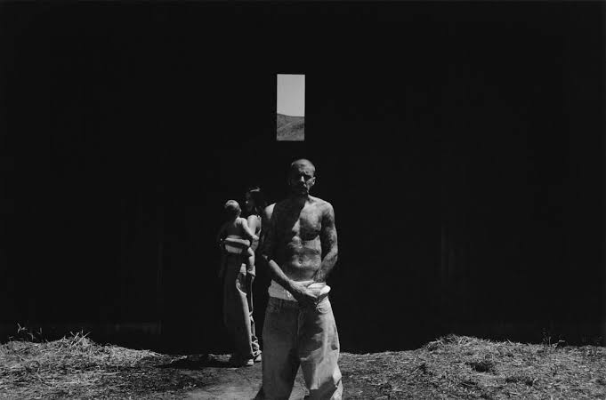
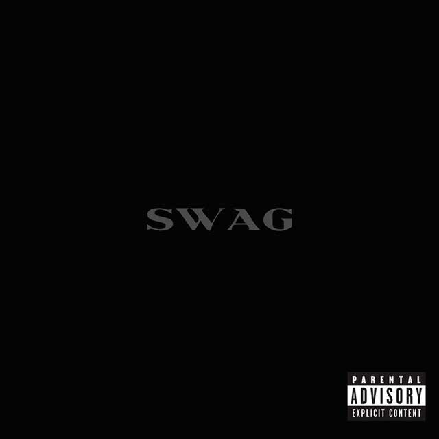
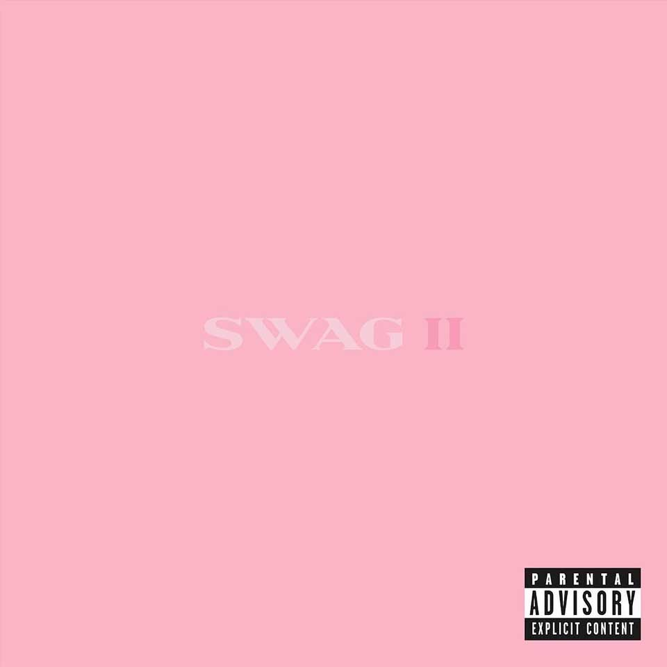

(2009) [FOTO ERA 1] [ ERA MY WORLD ]

El inicio del fenómeno. Flequillo y color morado. Éxito: "Baby".

Nacido en London, Ontario, Canadá, un pequeño niño comenzó a subir videos caseros a YouTube cantando con un talento innato. En 2008, su destino cambió para siempre cuando Scooter Braun descubrió sus videos de forma accidental, abriéndole las puertas a una audición con Usher y al inicio del fenómeno fan más grande del siglo.
Tras firmar con Island Records, su EP debut My World (2009) lo convirtió en el primer artista en tener siete canciones de un álbum debut en el Billboard Hot 100. Con el lanzamiento de My World 2.0 (2010) y el hit mundial "Baby", desató la "Bieberfever" llenando estadios en todo el planeta con apenas 16 años.
A lo largo de la década siguiente, evolucionó de ídolo adolescente a referente global del pop y el R&B con discos como Believe, Journals y Purpose (2015), rompiendo récords históricos de streaming y ganando múltiples premios Grammy. Hoy continúa reinventando su sonido con proyectos independientes como Swag.
[Foto de perfil: Una imagen de Justin de frente, nítida y de alta calidad]
-imagenes de los albumes
(2009) [FOTO ERA 1] [ ERA MY WORLD ]
El inicio del fenómeno. Flequillo y color morado. Éxito: "Baby".
[ ERA PURPOSE ] [FOTO ERAS 4] (2015)

El pico global. Cabello platinado.
(2025)[FOTO ERAS][ERA SWAG]

"El regreso a la palabra que lo definió. Justin cierra el círculo con un proyecto independiente y experimental, cambiando las reglas del pop comercial por la autenticidad y la crudeza musical."




Los hitos y récords que convirtieron a Justin en una leyenda del pop.
PREMIOS GRAMMY
PREMIOS BILLBOARD
RECORD GUINNESS
Hito: Primer artista en la historia en superar los 70 millones de suscriptores en la plataforma.
Hito: El artista masculino más joven en debutar en el puesto #1 del Hot 100 con el tema "What Do You Mean?".
Hito: Primer artista en ocupar los puestos #1, #2 y #3 de las listas británicas al mismo tiempo con sus éxitos de Purpose.
Hito: Co-líder del fenómeno mundial "Despacito Remix", marcando récords históricos de permanencia en el #1 de las listas internacionales.
My World Tour
 Believe Tour
Believe Tour
 Purpose World Tour
Purpose World Tour
 Justice World Tour
Justice World Tour

 :
:
 :
: